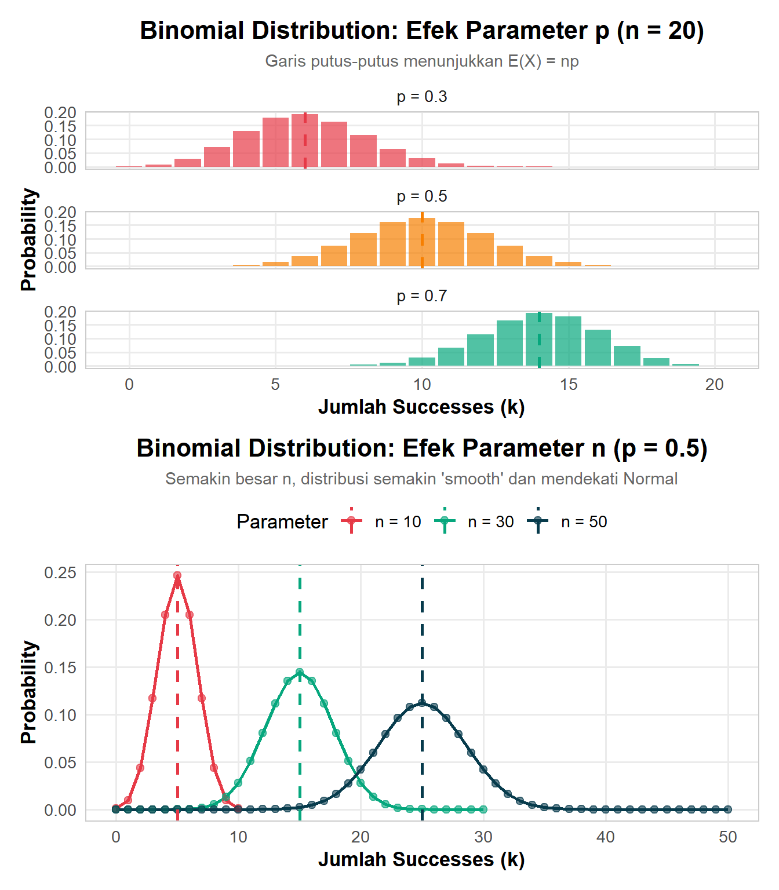

8 Distribusi Probabilitas
Playground: https://seeing-theory.brown.edu/
8.1 Pengantar: Random Variables
8.1.1 Apa itu Random Variable?
💡 Definisi Intuitif
Random Variable adalah fungsi yang memetakan hasil dari eksperimen random ke angka real.
Contoh sederhana:
- Lempar koin: H → 1, T → 0
- Lempar dadu: {⚀,⚁,⚂,⚃,⚄,⚅} → {1,2,3,4,5,6}
- Tinggi mahasiswa: Seseorang → tinggi dalam cm
8.2 Discrete vs Continuous
Discrete Random Variable hanya dapat mengambil nilai yang countable (dapat dihitung).
Karakteristik:
- Nilai: bilangan bulat atau himpunan finite/countable
- Contoh: Jumlah mata dadu, jumlah pelanggan, jumlah email
Represented by: Probability Mass Function (PMF)
Continuous Random Variable dapat mengambil nilai uncountable (tak terhitung) dalam suatu interval.
Karakteristik:
- Nilai: bilangan real dalam interval
- P(X = x) = 0 untuk nilai spesifik x
- Contoh: Tinggi, berat, waktu, temperatur
Represented by: Probability Density Function (PDF)
8.3 Discrete Distributions
8.3.1 Bernoulli Distribution
Distribusi Bernoulli adalah distribusi probabilitas paling fundamental - ini adalah “building block†untuk banyak distribusi lainnya. Bayangkan situasi paling sederhana: sebuah eksperimen yang hanya punya 2 kemungkinan hasil.
Contoh dalam Kehidupan Sehari-hari:
- 🪙 Melempar koin: Keluar kepala (sukses) atau ekor (gagal)
- 🥠Tes medis: Hasil positif atau negatif
- 🀠Free throw basket: Masuk atau meleset
- 📧 Email marketing: Pelanggan klik atau tidak klik
- 🔧 Quality control: Produk cacat atau tidak cacat
- 🯠Online ads: User klik iklan atau tidak
Setiap situasi ini dapat dimodelkan sebagai satu percobaan Bernoulli dengan probabilitas sukses \(p\).
🌟 Studi Kasus: Email Marketing Campaign
Sebuah perusahaan mengirim email promosi. Dari data historis, 12% pelanggan membuka dan mengklik link (p = 0.12).
Pertanyaan: Jika kita mengirim email ke satu pelanggan random, berapa probabilitas:
- Pelanggan akan klik? → P(X=1) = 0.12 = 12%
- Pelanggan tidak akan klik? → P(X=0) = 0.88 = 88%
Insight: Variance = 0.12 × 0.88 = 0.1056, menunjukkan ada uncertainty yang cukup besar dalam prediksi individual behavior.
Aplikasi Praktis:
- A/B Testing: Membandingkan dua versi iklan (mana yang lebih tinggi p-nya?)
- Medical Diagnosis: Sensitivity dan specificity dari tes adalah parameter Bernoulli
- Quality Control: Setiap produk pass/fail inspection
8.3.2 Binomial Distribution
Distribusi Binomial adalah generalisasi dari Bernoulli: bagaimana jika kita mengulang eksperimen Bernoulli berkali-kali secara independen? Berapa banyak sukses yang kita harapkan dari n percobaan?
Intuisi Sederhana:
Bayangkan Anda melempar koin 10 kali. Berapa kemungkinan dapat tepat 7 kali kepala? Atau minimal 8 kali kepala? Inilah yang dijawab oleh Binomial Distribution.
Contoh Dunia Nyata:
- 📠Call Center: Dari 50 panggilan, berapa yang akan berakhir dengan penjualan (jika conversion rate 15%)?
- 💉 Vaccine Efficacy: Dari 1000 orang divaksin, berapa yang tetap terinfeksi (jika efektivitas 95%)?
- 🯠Free Throws: Pemain basket dengan 80% free throw accuracy, dari 15 attempts berapa yang masuk?
- 🰠Casino: Dari 100 spin roulette, berapa kali pemain menang (probability per spin = 1/38)?
- 📦 Shipping: Dari 200 paket, berapa yang rusak (jika historical damage rate 2%)?
Syarat Menggunakan Binomial:
- ✅ Fixed number of trials (n diketahui)
- ✅ Two outcomes per trial (success/failure)
- ✅ Independent trials (hasil satu trial tidak mempengaruhi lainnya)
- ✅ Constant probability (p sama untuk setiap trial)

🔑 Key Insights
Symmetry: Distribusi simetris ketika p = 0.5
-
Skewness:
- p < 0.5 → right-skewed (ekor kanan)
- p > 0.5 → left-skewed (ekor kiri)
Convergence: Saat n besar, Binomial → Normal (Central Limit Theorem)
8.3.2.1 Contoh Perhitungan
💼 Kasus: Quality Control
Sebuah pabrik memproduksi komponen dengan defect rate 5%. Jika kita sample 20 komponen, berapa probabilitas:
- Tepat 2 defective?
- Paling banyak 1 defective?
- Lebih dari 3 defective?
📝 Solusi Detail
a) P(X = 2):
\[P(X = 2) = \binom{20}{2} (0.05)^2 (0.95)^{18} = 0.1887\]
b) P(X ≤ 1):
\[P(X \leq 1) = P(X=0) + P(X=1) = 0.7358\]
c) P(X > 3):
\[P(X > 3) = 1 - P(X \leq 3) = 0.0159\]
8.3.3 Poisson Distribution
Distribusi Poisson adalah distribusi untuk menghitung jumlah events yang terjadi dalam interval waktu atau ruang tertentu, ketika events terjadi secara acak tapi dengan rata-rata rate yang konstan.
Karakteristik Kunci Poisson: - Events terjadi independen satu sama lain - Events terjadi dengan rate konstan λ (lambda) - Tidak ada upper limit untuk jumlah events - Events jarang terjadi (probability per unit kecil)
Contoh Situasi Poisson dalam Kehidupan:
- 📠Call Center: Jumlah panggilan masuk per jam (misal rata-rata 12 calls/jam)
- 🚗 Traffic: Jumlah mobil lewat di intersection per menit
- 📧 Email: Jumlah email spam diterima per hari
- 🥠Emergency Room: Jumlah pasien datang ke ER per shift
- 🌟 Astronomi: Jumlah meteor terlihat per jam saat meteor shower
- 🛠Quality Control: Jumlah defect pada kain per meter persegi
- ☢️ Radioactive Decay: Jumlah partikel emitted per detik
- 🌠Website: Jumlah visitors ke website per menit
- ⚡ Infrastructure: Jumlah power outage per bulan di suatu area
- 📚 Typo Detection: Jumlah typo per halaman dalam buku
Mengapa Poisson Berbeda dari Binomial?
| Aspek | Binomial | Poisson |
|---|---|---|
| Jumlah trials | Fixed (n diketahui) | Infinite/unknown |
| Focus | # successes dalam n trials | # events dalam interval |
| Parameter | n dan p | λ (rate) |
| Best for | When n small, p moderate | When n large, p small |
Hubungan dengan Binomial:
Poisson adalah limiting case dari Binomial ketika:
- \(n \to \infty\) (jumlah trials sangat besar)
- \(p \to 0\) (probability per trial sangat kecil)
- \(np = \lambda\) (tetap konstan)
Contoh: Probability menang lotre dalam 1 draw sangat kecil (p ≈ 0), tapi opportunities (n) sangat banyak → model dengan Poisson!
🔑 Key Insights
Rare Events: Cocok untuk events yang jarang terjadi
Equal Mean-Variance: Ciri khas Poisson
Approximation: Ketika n besar dan p kecil, Binomial(n,p) ≈ Poisson(λ=np)
-
Shape:
- λ kecil → right-skewed
- λ besar → mendekati simetris (Normal)
8.3.3.1 Aplikasi Nyata
💼 Kasus: Call Center
Sebuah call center menerima rata-rata λ = 5 calls per menit. Berapa probabilitas:
- Tidak ada call dalam 1 menit berikutnya?
- Tepat 3 calls dalam 1 menit?
- Lebih dari 8 calls dalam 1 menit?
8.3.4 Geometric Distribution
Distribusi Geometric menjawab pertanyaan: “Berapa lama kita harus menunggu sampai sukses pertama?”
Berbeda dengan Binomial yang menghitung jumlah sukses dalam n trials fixed, Geometric fokus pada jumlah trials yang dibutuhkan sampai mendapat sukses pertama.
Bayangkan Situasi Ini:
- 🯠Memanah: Anda terus memanah sampai kena bullseye pertama kali. Berapa kali attempts yang diperlukan?
- 🰠Casino Gambler: Main slot machine terus sampai menang pertama. Berapa kali spin sebelum jackpot?
- 🔠Job Hunting: Kirim aplikasi kerja sampai diterima pertama kali. Berapa aplikasi yang dikirim?
- 📠Cold Calling: Sales person telepon calon customer sampai ada yang tertarik. Berapa calls dibutuhkan?
- 🣠Fishing: Melempar pancing sampai dapat ikan pertama. Berapa kali lempar?
- 🀠Basketball Practice: Latihan three-point shot sampai masuk pertama. Berapa attempts?
- 🮠Gaming: Main level game sampai lulus pertama kali. Berapa attempts?
Karakteristik Geometric:
- Trials independen dan identik
- Setiap trial punya probability sukses p yang sama
- Kita berhenti setelah sukses pertama
- Focus: WAKTU TUNGGU (waiting time) sampai event
Memoryless Property - Konsep Unik!
Geometric punya property istimewa: “past doesn’t matter”
\(P(X > n+m | X > n) = P(X > m)\)
Artinya: Jika Anda sudah gagal n kali, probability butuh m trials lagi sama saja dengan probability butuh m trials dari awal!
Analogi: Seperti melempar koin - tidak peduli sudah berapa kali gagal, probability sukses di next trial tetap sama (p).
Contoh Memoryless: - Seorang gambler sudah kalah 10 kali di roulette. Apakah peluang menang di spin ke-11 lebih besar? TIDAK! Tetap 1/38. - Anda sudah kirim 5 job applications tanpa respons. Apakah application ke-6 punya peluang lebih besar? TIDAK! Tetap sama (asumsi independent).
🎰 Contoh: Casino Gambler
Seorang gambler bermain roulette dengan peluang menang p = 1/38 ≈ 0.026.
Pertanyaan: Berapa expected number of games hingga menang pertama?
Jawaban: \(E(X) = \frac{1}{p} = \frac{1}{1/38} = 38\) games
Artinya rata-rata butuh 38 kali bermain untuk menang pertama kali!
8.3.5 Negative Binomial Distribution
Distribusi Negative Binomial adalah generalisasi dari Geometric Distribution. Jika Geometric bertanya “berapa trials sampai 1 sukses?”, maka Negative Binomial bertanya “berapa trials sampai mendapat r sukses?”
Intuisi:
Bayangkan Anda main basketball dan ingin masuk 5 three-point shots. Berapa banyak attempts yang Anda perlukan? Inilah yang dijawab Negative Binomial.
Contoh Situasi Nyata:
- 🯠Sales: Berapa cold calls dibutuhkan sampai closing 10 deals?
- 🰠Casino: Berapa kali bermain sampai menang 3 kali?
- 🔬 Lab Experiments: Berapa experiments sampai dapat r successful results?
- 🣠Fishing: Berapa kali lempar pancing sampai dapat 5 ikan?
- 📠Recruitment: Berapa interviews sampai hire r qualified candidates?
- 🀠Sports: Berapa free throw attempts sampai masuk 10 shots?
- 🲠Gaming: Berapa attempts sampai beat boss 3 times?
Perbedaan dengan Geometric:
- Geometric: Waiting time sampai 1st success (r=1)
- Negative Binomial: Waiting time sampai r-th success (r ≥ 1)
Dua Parameterisasi:
Ada 2 cara mendefinisikan Negative Binomial:
- Jumlah failures sebelum r successes
- Jumlah total trials sampai r successes
(Kita gunakan yang kedua - lebih intuitif)
Hubungan dengan Poisson:
Negative Binomial sering digunakan sebagai alternative to Poisson ketika data menunjukkan overdispersion (variance > mean).
- Poisson: Var(X) = λ
- Negative Binomial: Var(X) > E(X) (lebih fleksibel)
Aplikasi Praktis:
- Count data dengan extra variability
- Ecology: Jumlah spesies dalam area (clustering behavior)
- Epidemiology: Disease transmission dengan heterogeneity
- Marketing: Customer purchase frequency
8.4 Continuous Distributions
8.4.1 Uniform Distribution
Distribusi Uniform adalah distribusi continuous paling sederhana: semua nilai dalam interval [a,b] memiliki probabilitas yang sama. Ini seperti “fair chance†untuk semua angka dalam range tertentu.
Intuisi Visual:
Bayangkan sebuah papan datar horizontal - tidak ada bagian yang lebih tinggi atau rendah. Setiap titik di papan itu punya “ketinggian†(density) yang sama. Inilah Uniform Distribution!
Kapan Terjadi Uniform Distribution?
- 🲠Random Number Generator: Computer generate angka random antara 0 dan 1 → U(0,1)
- 🚌 Waiting Time: Anda tiba di bus stop random, bus datang setiap 10 menit → Waktu tunggu ~ U(0,10)
- ⰠMeeting Time: Meeting dijadwalkan antara 2-3pm, Anda datang random time → Arrival time ~ U(2,3)
- 🯠Dart Board: Melempar dart ke papan square (horizontal position) → Position ~ U(0, width)
- 📠Rounding Errors: Computer rounding error dalam calculation → Error ~ U(-0.5, 0.5)
- 🔢 Sampling: Pilih nilai random dari interval untuk Monte Carlo simulation
Karakteristik Khusus: - Flat PDF (tidak ada peak) - Probabilitas proporsional dengan length interval - P(X dalam [c,d]) = (d-c)/(b-a) - Setiap interval dengan panjang sama punya probabilitas sama
Penggunaan Praktis:
Uniform sering digunakan sebagai prior distribution dalam Bayesian statistics ketika kita tidak punya informasi tentang parameter - semua nilai equally likely.
🎲 Aplikasi
- Random Number Generator: Basis untuk generate random numbers
- Arrival Times: Ketika arrival dalam interval uniform
- Round-off Errors: Error pembulatan often uniform
- Monte Carlo Simulation: Sampling dari U(0,1)
8.4.2 Exponential Distribution
Distribusi Exponential adalah continuous analog dari Geometric Distribution. Ini memodelkan waktu tunggu sampai event pertama terjadi dalam Poisson process.
Perbedaan Geometric vs Exponential: - Geometric: Discrete waiting time (trials ke-1, ke-2, ke-3, …) - Exponential: Continuous waiting time (0.5 detik, 2.3 menit, 5.7 jam, …)
Situasi Nyata Exponential:
- ⏱️ Customer Service: Waktu antara kedatangan customer di toko
- 📠Call Center: Waktu antara incoming calls
- ⚡ Component Failure: Lifetime sebuah electronic component sampai rusak
- 🚗 Traffic: Waktu antara mobil yang lewat di jalan tol
- 🌊 Earthquake: Waktu antara earthquake events di suatu region
- 💡 Light Bulb: Lifetime lampu LED sampai mati
- 📡 Network: Waktu antara packet arrivals di router
- ☢️ Radioactive: Waktu antara radioactive decay events
- 🥠Medical: Waktu remission (bebas gejala) sebelum relapse
- 🌧️ Weather: Waktu antara hujan storms
Hubungan Erat: Poisson ↔︎ Exponential
Ini adalah dua sisi dari koin yang sama:
- Poisson: Jumlah events dalam fixed time interval
- Exponential: Time interval antara consecutive events
Contoh Konkret: - Jika calls datang dengan rate λ = 5 per menit (Poisson) - Maka waktu ANTAR calls mengikuti Exp(5) dengan rata-rata 1/5 = 0.2 menit = 12 detik
Memoryless Property - Sama seperti Geometric!
\(P(X > s+t | X > s) = P(X > t)\)
Artinya: Jika sebuah component sudah bertahan s jam, probability bertahan t jam lagi tidak bergantung pada history!
Contoh Memoryless: - Lightbulb sudah menyala 1000 jam. Berapa probability menyala 100 jam lagi? - Sama saja dengan probability lightbulb baru menyala 100 jam! - (Catatan: Ini asumsi teoretis - real lightbulbs might degrade over time)
Mengapa Ini Penting?
Memoryless property membuat Exponential sangat berguna untuk model random arrival processes dan component reliability dalam engineering.
🔗 Hubungan dengan Poisson
Exponential ↔︎ Poisson:
- Jika jumlah events mengikuti Poisson(λ) per unit time
- Maka waiting time antar events mengikuti Exponential(λ)
Contoh:
- Calls datang dengan rate λ=5 per menit (Poisson)
- Time between calls ~ Exp(5), mean = 1/5 = 0.2 menit = 12 detik
8.4.2.1 Aplikasi Praktis
8.4.3 Normal (Gaussian) Distribution
Distribusi Normal adalah “the king of distributions†- distribusi paling penting dalam statistika! Ini muncul di mana-mana dalam fenomena alam dan sosial.
Mengapa Normal Begitu Penting?
- Central Limit Theorem: Rata-rata dari banyak random variables → Normal (dijelaskan nanti)
- Natural Phenomena: Banyak hal di alam mengikuti Normal
- Mathematical Convenience: Mudah untuk analisis matematika
- Foundation: Dasar untuk banyak metode statistik (t-test, ANOVA, regression)
Fenomena Dunia Nyata yang Mengikuti Normal:
- 📠Human Measurements:
- Tinggi badan orang dewasa (mean ≈ 170cm, σ ≈ 10cm)
- Berat badan dalam populasi tertentu
- IQ scores (mean = 100, σ = 15)
- Blood pressure readings
- 📊 Measurement Errors:
- Scientific instrument readings
- Survey response errors
- Laboratory measurement errors
- 🯠Performance Metrics:
- Exam scores (jika well-designed dan large sample)
- Reaction times dalam experiments
- Athletic performance (dengan conditioning)
- ğŸ Manufacturing:
- Diameter baut yang diproduksi mesin
- Berat produk packaged
- Chemical concentration dalam mixture
- 💰 Financial (dengan caveats):
- Stock returns (approximation - in reality, fat tails exist)
- Pricing errors
- Residuals dalam financial models
- 🌡️ Environmental:
- Temperature fluctuations around mean
- Rainfall amounts (dengan transformation)
- Pollution levels
Karakteristik Bell Curve:
- Symmetric around mean μ
- Unimodal (satu peak di center)
- Mean = Median = Mode (semua di tengah)
- 68-95-99.7 Rule (Empirical Rule)
- Tails extend to infinity (tapi probability sangat kecil di extremes)
Parameters dan Interpretasi:
- μ (mu): Location parameter - menggeser curve ke kiri/kanan
-
σ (sigma): Scale parameter - mengontrol spread/variability
- σ kecil → narrow, tall curve (data concentrated)
- σ besar → wide, flat curve (data spread out)
Kapan TIDAK Menggunakan Normal?
⚁ ï¸ Normal tidak cocok untuk:
- Data dengan skewness berat (income, wealth)
- Data dengan outliers ekstrem (stock market crashes)
- Bounded data (proportions 0-1, counts)
- Discrete outcomes
- Fat tails (extreme events more common than Normal predicts)
🎯 68-95-99.7 Rule (Empirical Rule)
Untuk distribusi Normal:
- 68.3% data berada dalam ±1σ dari mean
- 95.4% data berada dalam ±2σ dari mean
- 99.7% data berada dalam ±3σ dari mean
Aplikasi praktis: Deteksi outliers - data di luar ±3σ sangat rare!
8.4.3.1 Standard Normal & Z-Scores
📊 Standard Normal: N(0,1)
Standardization (Z-score transformation):
\[Z = \frac{X - \mu}{\sigma} \sim N(0,1)\]
Interpretasi: Z-score memberitahu berapa standard deviations suatu nilai dari mean.
Contoh:
- Z = 1.5 → nilai 1.5 SD di atas mean
- Z = -2.0 → nilai 2.0 SD di bawah mean
8.4.3.2 Aplikasi: Quality Control
8.4.4 Student T Distribution
Distribusi Student T (atau t-distribution) adalah distribusi yang sangat penting dalam inferential statistics, terutama ketika bekerja dengan small samples dan unknown population variance.
Sejarah Menarik:
Distribusi ini ditemukan oleh William Sealy Gosset (1908) yang bekerja di Guinness Brewery. Dia publish dengan pseudonym “Student†karena company policy, makanya namanya “Student’s t”.
Kapan Menggunakan T Distribution?
T distribution digunakan ketika:
- Small sample size (n < 30)
- Population standard deviation σ unknown (harus estimate dari sample)
- Hypothesis testing dan confidence intervals untuk means
- Data assumed normally distributed (atau approximately normal)
Karakteristik T Distribution:
- Shape: Bell-shaped seperti Normal, tapi dengan heavier tails (fat tails)
- Symmetric around 0
- One parameter: degrees of freedom (df = n - 1)
- Ketika df → ∞, T → Normal(0,1)
Perbedaan T vs Normal:
| Aspek | Normal Z | Student T |
|---|---|---|
| Use when | σ known, large n | σ unknown, small n |
| Tails | Thinner | Heavier (more conservative) |
| Parameters | μ, σ | df (degrees of freedom) |
| Shape | Fixed | Changes with df |
Aplikasi Praktis:
- One-sample t-test: Testing if population mean = hypothesized value
- Two-sample t-test: Comparing means between two groups
- Paired t-test: Before-after comparisons
- Confidence Intervals: For population mean with unknown σ
- Regression: Testing significance of coefficients
Contoh Penggunaan:
Anda ingin test apakah rata-rata tinggi mahasiswa = 170cm, tapi hanya punya sample 15 orang. Gunakan t-test, bukan z-test!
8.4.5 Chi-Squared Distribution
Distribusi Chi-Squared (χ²) adalah distribusi untuk sum of squared standard normal variables. Ini fundamental dalam statistical testing, terutama untuk variance dan goodness of fit.
Konstruksi:
Jika \(Z_1, Z_2, \ldots, Z_k \sim N(0,1)\) independent, maka: \[\chi^2 = Z_1^2 + Z_2^2 + \cdots + Z_k^2 \sim \chi^2(k)\]
Kapan Menggunakan Chi-Squared?
- Testing variance: Apakah sample variance berbeda dari hypothesized value?
- Goodness of fit test: Apakah data fit dengan distribusi tertentu?
- Test of independence: Apakah dua categorical variables independent?
- Homogeneity test: Apakah beberapa proportions sama?
Karakteristik:
- Right-skewed (positive skew)
- Support: x ≥ 0 (hanya positive values)
- One parameter: df (degrees of freedom)
- Ketika df besar, mendekati Normal
Aplikasi Praktis:
- Chi-square test of independence: Hubungan gender dan preference
- Chi-square goodness of fit: Apakah dice fair?
- Variance testing: Quality control - checking consistency
- Categorical data analysis: Contingency tables
Contoh: Test apakah hasil dice roll fair (setiap angka 1-6 equally likely).
8.4.6 F Distribution
Distribusi F (Fisher distribution) digunakan untuk comparing variances antara dua groups. Ini adalah ratio dari dua chi-squared distributions.
Konstruksi:
\[F = \frac{U_1/d_1}{U_2/d_2}\]
dimana \(U_1 \sim \chi^2(d_1)\) dan \(U_2 \sim \chi^2(d_2)\) independent.
Kapan Menggunakan F Distribution?
- ANOVA (Analysis of Variance): Comparing means across ≥3 groups
- F-test for equality of variances: Apakah dua populations punya variance sama?
- Regression analysis: Testing overall model significance
- Comparing nested models: Model selection
Karakteristik:
- Right-skewed
- Support: F ≥ 0
- Two parameters: \(d_1\) (numerator df) dan \(d_2\) (denominator df)
- Not symmetric
Aplikasi Praktis:
- ANOVA: Comparing teaching methods (3+ groups)
- Regression: Testing if model is better than intercept-only
- Quality Control: Comparing variability between machines
- Finance: Testing equality of volatilities
Contoh: ANOVA untuk membandingkan effectiveness 3 different training programs.
8.4.7 Gamma Distribution
Distribusi Gamma adalah flexible family dari distribusi continuous yang sangat berguna untuk modeling waiting times dan skewed positive data.
Generalisasi:
Gamma adalah generalisasi dari Exponential:
- Exponential: Waiting time sampai 1st event
- Gamma: Waiting time sampai k-th event dalam Poisson process
Karakteristik:
- Support: x > 0 (hanya positive values)
- Two parameters: shape (k atau α) dan scale (θ) atau rate (β)
- Flexible shapes: Bisa right-skewed, symmetric (jika k besar), atau exponential (k=1)
Hubungan dengan Distribusi Lain:
- Gamma(1, β) = Exponential(β)
- Gamma(k/2, 2) = Chi-squared(k)
- Sum of k independent Exp(β) = Gamma(k, β)
Aplikasi Praktis:
- Queueing theory: Total waiting time untuk k customers
- Reliability: Time until k-th failure
- Insurance: Aggregate claim amounts
- Rainfall: Total rainfall amounts (positively skewed)
- Finance: Modeling stock price changes
- Survival analysis: Time to event data
Contoh: Modeling total time sampai 5 customer arrive di bank.
8.4.8 Beta Distribution
Distribusi Beta adalah distribusi untuk probabilities and proportions - nilai yang bounded antara 0 dan 1. Ini sangat berguna untuk Bayesian statistics.
Karakteristik Unik:
- Support: 0 ≤ x ≤ 1 (bounded!)
- Two parameters: α dan β (both > 0)
-
Extremely flexible shapes:
- U-shaped
- Bell-shaped
- Uniform
- J-shaped
- Reverse J-shaped
Interpretasi Parameters:
Parameter α dan β bisa diinterpret sebagai:
- α - 1: jumlah “successes”
- β - 1: jumlah “failures”
Semakin besar α dan β, semakin concentrated distribusi.
Special Cases:
- Beta(1,1) = Uniform(0,1)
- Beta(α,β) symmetric when α = β
- Beta(0.5, 0.5) = U-shaped (Jeffreys prior)
Aplikasi Praktis:
- Bayesian Statistics: Prior dan posterior untuk probabilities
- Project Management: Modeling task completion percentages (PERT)
- Quality Control: Proportion of defective items
- Marketing: Click-through rates, conversion rates
- Sports Analytics: Batting averages, shooting percentages
- Genetics: Allele frequencies
- Finance: Recovery rates on defaulted loans
Contoh:
Anda observed 8 successes dan 2 failures. Beta(9, 3) menjadi posterior distribution untuk true success probability p.
8.4.9 Central Limit Theorem (CLT)
Central Limit Theorem adalah salah satu teorema paling powerful dalam statistik. Teorema ini menjelaskan mengapa Normal Distribution begitu sering muncul.
Pernyataan Sederhana:
“Jika Anda mengambil rata-rata dari banyak random variables (apapun distribusinya), rata-rata tersebut akan mendekati Normal Distribution.”
Implikasi Praktis:
- Sample Means: Rata-rata sample akan Normal, even if population bukan Normal
- Large n: Semakin besar sample size, semakin mendekati Normal
- Any Distribution: Berlaku untuk distribusi apapun (asal punya mean & variance)
🔑 Key Takeaways CLT
- Universal: Berlaku untuk SEMUA distribusi (dengan finite mean & variance)
- Rule of Thumb: n ≥ 30 biasanya cukup untuk approximation yang baik
- Power: Memungkinkan inference dan hypothesis testing tanpa tahu distribusi population!
- Foundation: Dasar untuk confidence intervals, t-tests, dan banyak metode statistik
Aplikasi Praktis CLT: - Survey sampling: Sample mean mendekati population mean - Quality control: Average measurements dari batch - A/B testing: Comparing means between groups - Financial analysis: Portfolio returns
8.5 Perbandingan Distribusi
8.5.1 Decision Tree: Memilih Distribusi yang Tepat
| Distribution | Type | Use_Case | Parameters | Mean | Support |
|---|---|---|---|---|---|
| Discrete Distributions | |||||
| Bernoulli | Discrete | Single trial, 2 outcomes | p | p | 0, 1 |
| Binomial | Discrete | # successes in n trials | n, p | np | 0 to n |
| Geometric | Discrete | # trials until 1st success | p | 1/p | 1, 2, 3... |
| Poisson | Discrete | # events in fixed interval | λ | λ | 0, 1, 2... |
| Negative Binomial | Discrete | # trials until r-th success | r, p | r/p | r, r+1... |
| Continuous Distributions | |||||
| Uniform | Continuous | All values equally likely | a, b | (a+b)/2 | [a, b] |
| Exponential | Continuous | Waiting time for events | λ | 1/λ | x ≥ 0 |
| Normal | Continuous | Natural phenomena, averages | μ, σ² | μ | (-∞, ∞) |
| Student T | Continuous | Small samples, unknown σ | df | 0 | (-∞, ∞) |
| Chi-Squared | Continuous | Variance tests, goodness of fit | df | df | x > 0 |
| F | Continuous | Comparing variances, ANOVA | df₁, df₂ | df₂/(df₂-2) | x > 0 |
| Gamma | Continuous | Waiting time for k events | α, β | α/β | x > 0 |
| Beta | Continuous | Probabilities and proportions | α, β | α/(α+β) | [0, 1] |
8.5.2 Visual Comparison: Shape Comparison
8.6 Summary & Key Takeaways
🎯 Praktik Terbaik
- Understand the process generating data first
- Check assumptions before applying distributions
- Validate with data - theory vs reality
- Use CLT wisely - know its limitations
- Visualize always - plots reveal insights
8.7 Referensi & Pembelajaran Lanjut
📖 Sumber Belajar
Buku:
- Seeing Theory by Devlin, Guo, Kunin, Xiang
- “Introduction to Probability†by Bertsekas & Tsitsiklis
- “All of Statistics†by Larry Wasserman
Online Resources:
- Seeing Theory Website - Interactive visualizations
- Khan Academy Statistics
- StatQuest YouTube Channel
Practice:
- Simulate distributions in R/Python
- Work through real datasets
- Join Kaggle competitions
💠Final Thoughts
“The world is an uncertain place. Probability distributions help us quantify and reason about that uncertainty in a principled way.”
Memahami distribusi probabilitas bukan hanya tentang rumus dan grafik - ini tentang cara berpikir dalam menghadapi ketidakpastian dan membuat keputusan berdasarkan data.
Next steps:
- Apply distributions to YOUR data
- Experiment with simulations
- Understand assumptions and limitations
- Keep learning - statistics is a journey, not a destination!
📠Selamat Belajar! Keep Exploring Probability!
Dibuat dengan ❤️ menggunakan Quarto